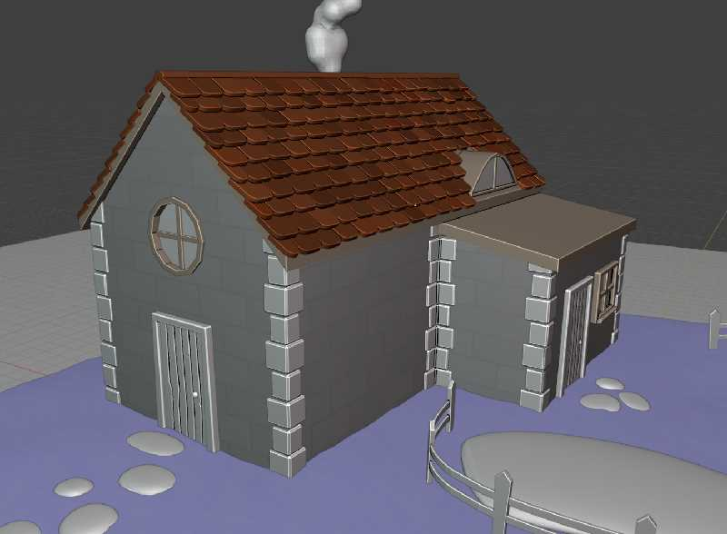
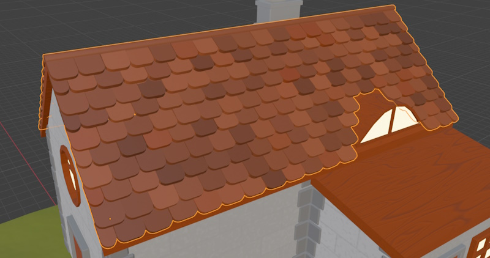
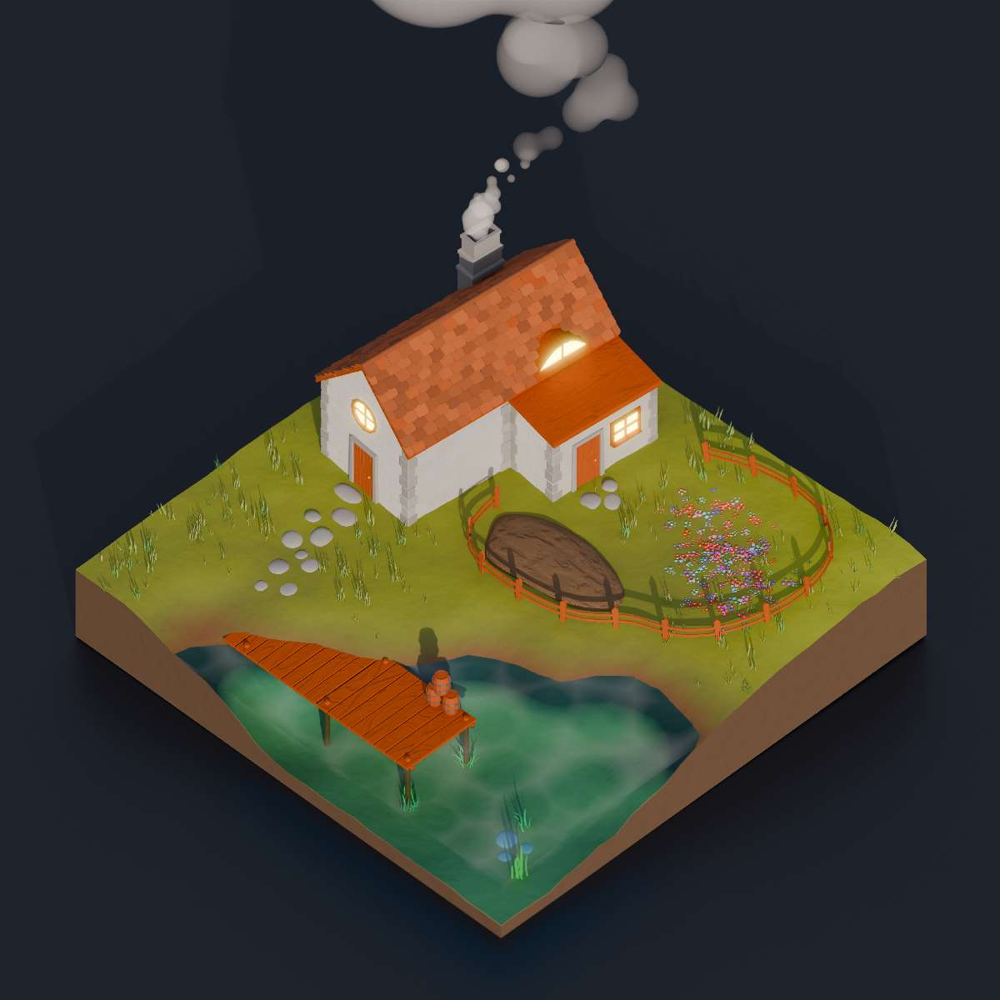

Individual Game/3D World Practice
Overview
Stylised 3D diorama modelled in Blender and imported into Unity for use as a game environment
Date Started: 26th September 2024
My Role:Designer, 3D Artist
Software Used: Unity, Blender
1.1 | Introduction & Goal
This is my first individual project that I worked on during my enrolment at the University of Winchester. The brief for the project involved creating an original environment or diorama, in any 3d modelling software, that can be used in Unity to display the ability to design and create a game environment.
I began by creating new Blender and Unity projects, installing the Universal Render Pipeline (URP) in Unity. I then used URP to ensure that I could create interesting shaders and materials that achieved the desired artstyle.
1.2 | Concept and Inspiration
While the brief was being delivered, many ideas came into my head, some of which I had been wanting to create for a long time. I decided to draw inspiration from many artists such as Alex Treviño, Ian Hubert, Polygon Runway and Grace Collett.
My methodology involved gathering reference images of artwork I liked and deciding on an artstyle for my project. I listed what I liked about each artstyle, and why I think they would suit my project. At the same time as this, I was writing down ideas for the scene that I thought of during my research for inspiration and style, so I didn't forget them and so I could weigh the pros and cons of each scene.
My scene ideas and inspiration images were gathered together using Miro.
Scene Ideas city centre, tall buildings, circular park, homely, swingset + calming, simpler blocking out + showcases building design - large scale, perhaps too much detail to manage for a short project isolated field, pond, fishing, small wooden shack, character appears small in view + focus on environment rather than character design + interesting to me + particle system for grass, trees + can be developed in both high and low fidelity artstyles + environmental storytelling isometric big city, heavily stylised cars driving + satisfying render + keyframed or procedural car movement + explorable from ground-view in Unity - difficult to model detailed buildings & cars - doesn't show a large variety of materials and structures - not many organic elements dark, ian-hubert-esque but low-poly alleyway, dystopian neon lighting, character's stall selling something + interesting to me - high-fidelity, difficult to manage in a short time-frame - big scope

After spending some time on this, I decided that my scene would be created using an artstyle that is a mixture of what is shown in the clay-styled references, and the low-poly reference: a low-fidelity, toon-like stylised diorama, with low-poly assets, but with a clay feel.
I then developed my ideas into my final concept: an isolated farmer's cottage with a pier leading into the middle of a pond. The farmer is sat alone with their legs hanging off of the pier, while fishing.
1.3 | Tools and Software
Blender
I chose to use Blender as my primary 3D modelling and shading workspace, as I have a lot of experience working in the Blender workspace, since the release of Blender v2.8, and I feel comfortable using the modelling and shading tools provided. Coming into this project, I knew there would have been a lot of techniques used that I have never learned before, so I was eager to improve and expand my skillset along the way, and learn many techniques that are transferrable to other 3D modelling programs.
Unity
A requirement for the brief was that the resulting environment was imported into Unity, and explorable by a player character. Therefore, I chose to use Unity 2022.3.47f1, as that was the most recent LTS package at the time of starting the project. I was familiar with the program before this project, however I expected to run into a lot of challenges and roadblocks along the way, learning how to navigate them and result in an expanded skillset, suitable for game development.
Miro
Miro is an online interactive whiteboard/note-taking app, used widely in industry and I chose to use it for the first time with this project, to gather my ideas and inspiration in a manageable and shareable format, ideal for showing how and why I developed my ideas.
1.4 | Modeling Process
Step 1: Initial Concept and Sketches
To begin sketching and expanding on my concept, I first researched real-world examples of buildings and piers in a similar setting and style to what I desired and envisioned.


I then used the references to quickly sketch a base layout for my scene, by using the grease pencil in Blender, and sketching a very simple layout in the camera viewport. I spent a short amount of time on this sketch, I refined it until I was happy with the composition, and then quickly moved onto blocking out - as I find blocking out to be a much better way at developing and prototyping my ideas in a 3D space.

Step 2: Blocking Out the Environment
After I was happy with the overall composition, I quickly started blocking out the scene. My favourite way to create ideas is to rapidly ideate, sketch, block out, and iterate. This methodology helps me create my best possible ideas, and follows conventions in Design Thinking practice.
To block out the scene, I kept my sketch and my references open in a Miro whiteboard on my second monitor, and placed primitives in the viewport to establish the relative size, location, and form of the main objects in the scene. I didn't adhere strictly to the sketch, as I wanted to ensure the piece could successfully evoke a feeling of isolation while also giving the feeling of looking into a small piece of another world, all in an aesthetically pleasing form.
Primitives
Basic 3D geometric shapes that can be used as building blocks to create more complex shapes, for example: cubes, spheres, cylinders and planes.
I added basic shaders to my block out, to better represent the world I was creating.

After my first blocking out of the scene, I decided to make some key changes that would influence the overall direction of the project.
- Cut out a smaller square from the scene
The environment was to be explored in a 3D world, so Having the edges off into the distance with a fixed cut-off would break all sense of it being a section from a lived-in world. My first block out was designed to fit a fixed camera angle, but I reworked it to better fit the brief and expectations of the project. - Moved the primary camera angle
The scene draws inspiration from isometric dioramas, so I moved the camera to outside of the scene, looking down. This helped to better establish the feeling of 'looking into' a world. - Built an organic timber frame model for the house
I built a timber frame for the house, as my concept involved an old stone cottage with a timber frame, so I quickly threw together what I imagined the base layout of the house to be.


Step 3: Detailed Modeling
My first stage to beginning the detailed modelling stage was to review the previous block outs, and add notes as to what I would like to see improved and added, to establish a set list of goals and ensure that I could fit everything into the time I had to spend on this project.

I began by making a new .blend file, and modelling the ground from scratch. I began with a plane which I subdivided, and edited in the Z-axis with proportional editing, to create a smooth, organic hill shape, with a deep area for the water to sit. To create the flat sides, I extruded the outer corners down in the Z-axis, made them level with each other with the keystrokes
S, Z, 0
Scale, Z - axis, 0
Then, I used the F key to join them together in to a flat base. Finally, I held the Alt key, and selected the loop around each side, and pressed F again, to fill in each of the four side faces of the ground mesh. This left me with n-gons for the sides, however the mesh is intended to be entirely static, and not deformed, additionally, the wall is completely flat. Therefore, I expected there to be no issue with leaving them as n-gons.
N-Gons
Polygons with more than four vertices and edges. They are avoided in most cases, as they can cause issues when rendering or deforming a mesh.
- House -
The base mesh for the house is very simple, I started with a cube, scaled it to an approximate size, then created an edge loop, selected the middle edge on the top face, and moved it upwards in the Z-axis to create the roof & gable.
Then, I used the Knife tool to cut an edge into one of the side faces, and extruded out the attachment. To clean up on useless edges, I dissolved the unnecessary edges.
The circular window was created using the Loop Tools addon, by creating a point in the center of where I wanted the window, then bevelling the vertex, and using the Loop Tool's 'Circle' tool.
Then, I extruded it inwards.
The corner bricks and details are separate children of the main body of the house.
I created two bricks from a bevelled cube, then used a series of array and mirror modifiers to place them on the corners of the house. Manual adjustment was necessary afterwards, however using modifiers saved time.
To make a more organic feel, I used randomise transform to give each brick a unique offset/rotation. This makes everything feel more natural and organic.
- Tiles -
The tiles were modelled in a similar manner to the corner bricks of the house - with a series of array modifiers to create a staggered tile pattern.
Difficulty came with preventing clipping of tiles through the roof window, and also with the smaller tiles on the edges. Therefore, I had to apply the modifiers and manually remove and add tiles where needed.
This is not the ideal method to making this. In the future, if I was to do this again, I would research ways to do this using better methods such as geometry nodes instead. This would allow for more precise control over tile placement and easier adjustments around windows and edges, while maintaining a non-destructive workflow that's easier to modify later. The node-based approach would also make it simpler to adjust tile spacing, rotation, and overlap dynamically.
- Props -
I decided that the environment needed small props to make it feel more 'lively' and natural. To fit the setting I created props that could be fit for a gardener/landowner.
For the wellies, I handmade the overall shape using lots of reference images from different angles. Then, used the Quad Remesher 1.3 addon to quickly and efficiently retopologise the mesh. I used this
mainly to save time, however it still has issues, in the future, it would be better to retopologise by hand.
The trowel was made in a similar manner, however without the use of Quad Remesher.
1.5 | Shading, Texturing and UV Mapping
- Shading -
In Blender, all of the materials used are procedural. They were all created by myself, using the Node Wrangler addon. For example, the colours for the tiles are determined randomly per each tile using an Object Info node, and the water shader uses many nodes.
These shaders allowed me to quickly create a detailed render with nice-looking materials, for example the water.
However, these shaders cannot easily be imported to Unity. Thus, I had to do a mixture of texture baking and remaking the shaders in Unity.
I wasn't fully happy with my water shader, I felt like it didn't fit the style I was going for, so I decided to take inspiration and modify an already existing, more toon-like water shader.
This shader uses Unity's URP shader graph system, and is available here.
I modified it to suit my scene, and adjusted using the shader's parameters to achieve the look in [1.5.1].
.gif) 1.5.1
1.5.1
For other shaders that I were happy with, I had to bake both albedo colour maps, and normal maps.
For example, the wooden deck [1.5.6] uses a procedural texture that needed baking to be used in Unity. First attempts at creating the decking used baking the normals of a high-fidelity model into a much lower-poly model [1.5.2], [1.5.3], [1.5.4], however I decided that this didn't fit my artstyle, so I decided to go for a much simpler approach.

I repeated the process of baking maps for many other objects including the ground, house, tiles, etc. Then I imported them into Unity by extracting materials from the .blend file, then modifying them to use the appropriate maps in Unity.
1.6 | Lighting, Rendering & Unity
I decided to go for a very simple approach to lighting for this project. This was because I was inexperienced with lighting a 3D scene professionally, and I didn't want to increase the workload and time spent on this project too much.
If I was to do a project like this again, I would instead manually light the scene, as this can bring a much more unique and lively atmosphere to what is currently a somewhat generic scene.
This would require research into lighting methodology.
To light my scene, I used a HDRI (High Dynamic Range Image) environment map to create ambient lighting and reflections. This helped achieve natural-looking shadows and highlights across all materials, particularly enhancing the metallic and reflective in the scene.
The HDRI used was from PolyHaven. It was very easy to implement into both Unity and Blender, which immediately gave the scene natural lighting. I played with orientation and saturation to get the desired result.
Additionally, I decided to, in Unity, take advantage of URP and create a Global Volume [1.6.1]. In this, I gave the camera post-processing effects, such as bloom, vignette, and depth of field bokeh.
This helped bring the scene to life, and make the sense of scale feel accurate to how I envisioned it. Furthermore, I could then tweak the appearance in-camera to make the artstyle 'pop'.
To make the demo playable, I decided to use a pre-made character controller available on the Unity AssetStore from Invector
I used this despite the fact that I could create my own because I didn't want to spend time developing and refining a character controller, as the aim of this project is to develop and display my 3D environment art skills. Therefore, I made the easy decision to use a pre-existing character controller.
I chose Invector instead of Unity's own template character controller because it seemed to be more up-to-date, and have much more fine-control over how players move, even in the free version of the asset.
Limitations
In my opinion, the biggest limitations to my scene are a lack of detail, generic proportions, and generic lighting. While these are not limitations in and of themselves, I believe that they prevented me from achieving
the art-direction that I had planned and envisioned.
Adding some props to the scene did help with this, however to improve this further, I think that spending more time on finer details would help towards my goal. I think that spending a handful of weeks on prop-modelling alone could really help make the scene feel alive and cohesive.
Furthermore, everything in the scene has rather realistic proportions. This was my goal from the beginning, however I feel like the scene could be improved by redesigning it with more cartoon-ish proportions. This, in conjunction with a more unique approach to lighting, could really make the scene
stand out, and feel more like it is a segment from a full world rather than a small-scale interpretation of reality.
Additionally, the use of a pre-made character controller meant that I didn't have full control over the player's movement, as for example it would've been difficult to implement other methods of traversal such as climbing. For this project, I would've loved to have been
able to implement a small swimming state for when the player is in the water, as right now, the player can walk full-speed, with the full effect of gravity, straight through the water. However, this does not affect my ability to display my skills.
Lastly, I feel like some elements of the scene aren't fully cohesive in style. For example, the large tree feels very out-of-place. If I was to improve upon this, I would give it a much more unique shape, and most importantly, a material that doesn't clash with the rest of the scene.
Further Research
To further improve on this, or for similar projects in the future, I should research into advanced lighting techniques, stylized art direction, procedural asset generation using geometry nodes, character controller implementation, and environment design principles. Specifically, studying professional lighting setups would help create more atmospheric and unique scenes, while deepening my knowledge of stylized art would help develop a more cohesive and distinctive visual style. Learning geometry nodes would improve my workflow for creating repeating elements like tiles and bricks, and understanding character controller development would allow for better integration of custom gameplay features like swimming. Additionally, researching environment design principles would help create more intentional design choices that lead to a better compositional balance.
Final Thoughts
This project has served as a great learning experience in environment design and 3D modeling. While working on it, I've improved my skills with industry-standard tools such as Blender and Unity, learned the importance of proper planning and reference gathering, and developed a better understanding of the entire pipeline from concept to playable environment. Though there are areas for improvement, particularly in lighting and stylistic coherence, the project has successfully achieved its core goals of creating an explorable mini 3D diorama. The challenges I faced have provided direction for my future learning and development as a 3D artist.
References
[1.4.1] The Cabin on the Lake (2022). [Photo]. Coolstays. Retrieved from https://www.coolstays.com/blog/round-ups/book-now-for-2023/25448
[1.4.2] A Guide To Ullswater (2020). [Photo]. The Lakeland Cottage Company. Retrieved from https://www.lakeland-cottage-company.co.uk/guides/ullswater
[1.4.3] Old stone cottage, Castleton, Peak District (2016). [Photo]. Baz Richardson. Retrieved from https://www.flickr.com/photos/bazrichardson/28992106205
[1.4.4] Timer Frame Home - Rustic Renewal 1 (n.d.). [Photo]. Timber Home Living. Retrieved from https://www.timberhomeliving.com/articles/building-the-reclaimed-timber-home-rustic-renewal/
[1.4.5] Hunter Boots Womens Green Tall Matt Wellies (n.d.). [Photo]. Hunter | Curvissa. Retrieved from https://www.curvissa.co.uk/products/hunter-boots-womens-green-tall-matt-wellies/_/A-74C301_4
[1.4.6] Modern polyurethane Wellington boots (2017). [Photo]. Abc10. Retrieved from https://en.wikipedia.org/wiki/Wellington_boot#/media/File:Sievi_Boots_(2).jpg
.jpg){kind=link}
Quad Remesher 1.3. Retrieved from https://exoside.com/
Water Shader. Retrieved from https://www.youtube.com/watch?v=MHdDUqJHJxM